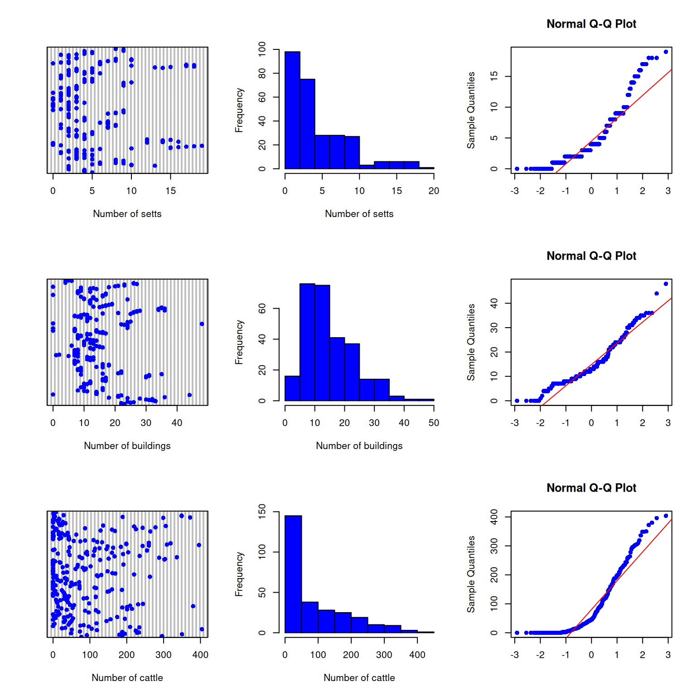
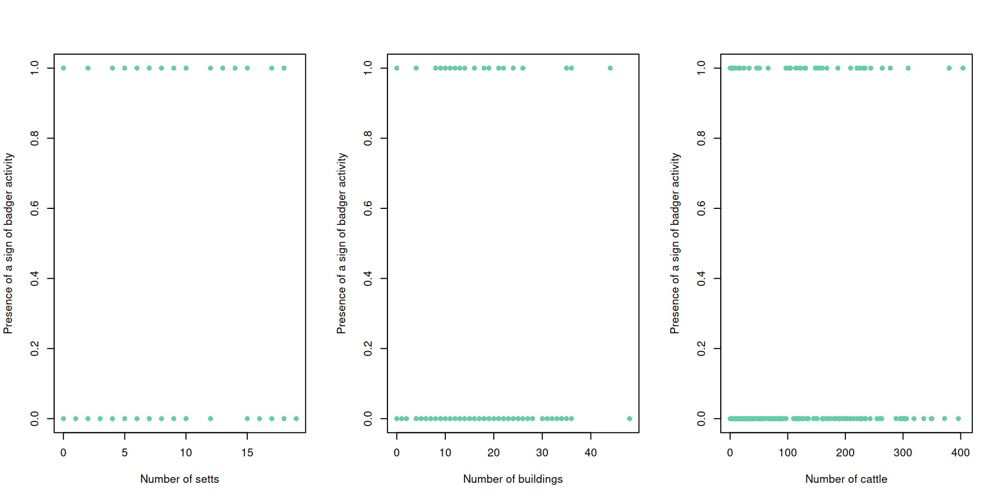
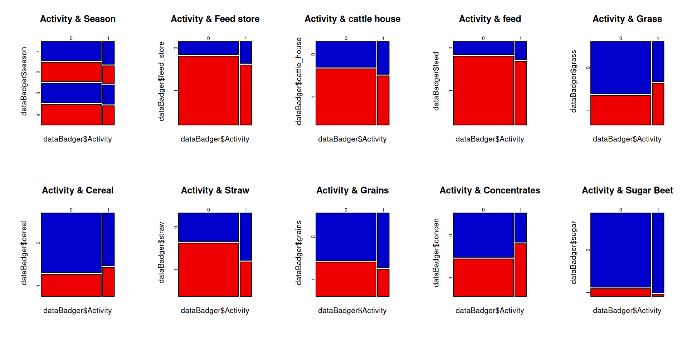
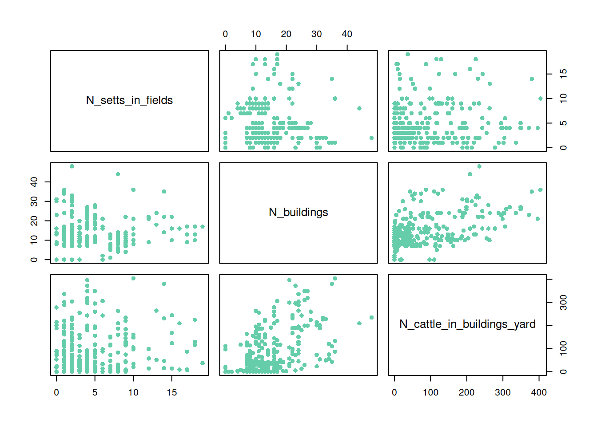
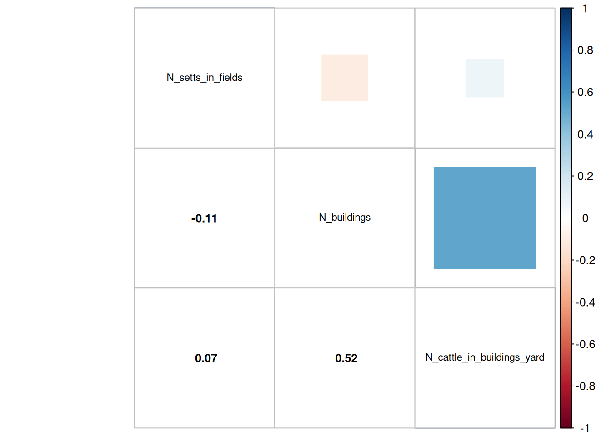
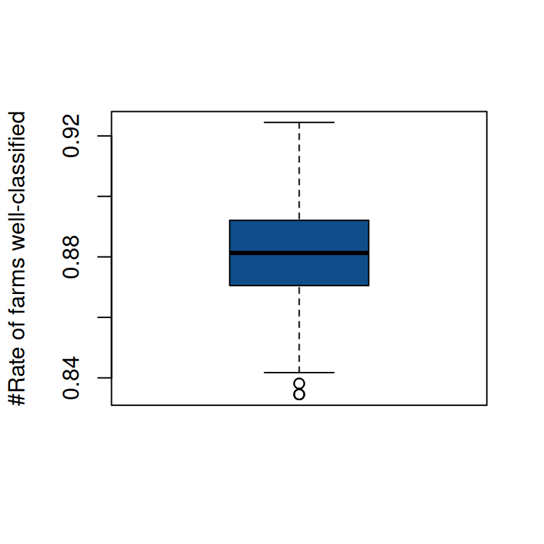

Code
# library import
library(corrplot)
library(lme4)
library(rsq)BADGER EXAMPLE
We present here a reminder sheet on Generalized Linear Mixed Models (GLMMs) and its specific features. Its use will be illustrated through a study applied on badgers from Walker et al. (2009) .
General Linear Models are traditionally used to describe the relationship between a continuous response (\(Y\)) and one or more explanatory variables (\(X_{1}\),\(X_{2}\)…\(X_{p}\)). They rely on three main assumptions : independence of residuals, normality of residuals and homogeneity of variances (homoscedasticity). However, in many fields (ecology, epidemiology, etc), the response variable (\(Y\)) is discrete, for example it can take the form of counts, binary outcomes (presence/absence), and so on.
Applying a General Linear Model to this type of data is problematic for two main reasons:
For discrete responses, the variance of \(Y\) typically depends on its mean-variance relationship. As a result, the variance is not constant across observations, directly invalidating the assumption of homogeneity.
Fitting a General Linear Model to count data also leads to negative predicted values and non-normal residuals, which are not interpretable given the nature of the response variable.
In short, General Linear Models are not well-suited for discrete responses. Hence, we need specific tools to analyse discrete response data. These are Generalized Linear Models (GLMs).
A Generalized Linear Model extends the classical linear model through three steps:
Assumption of the distribution : the distribution of the response variable \(Y_{i}\) is assumed to belong to a certain distribution law (e.g. Poisson, Binomial, Gamma)
Specification of the systematic part : This is the linear function of the explanatory variables (the linear predictor called \(\eta\))
The link function (\(g\)) : This defines the relationship between the expected mean value of \(Y_{i}\) and the systematic part \(\eta\).
A Generalized Linear Model can be written as : \[g(\mu_{y})= \alpha+ \beta_{1}.X{i1}+ \beta_{2}.X{i2}+\beta_{3}.X{i3}+...\beta_{p}.X{ip} = \eta \]
The linear predictor \(\eta\), emerges from the linear model as a sum of the terms for each of the \(p\) parameters. This is not a direct value of \(Y\). The value of \(\eta\) is obtained by transforming the value of \(Y\) by the link function, and the predicted value of \(Y\) is obtained by applying the inverse link function to \(\eta\).
Depending on the sampling design or the experimental setup, independence of residuals is not respected as some statistical units are related. To account for this dependence structure, we can include random effects in the model.
The resulting model, called Generalized Linear Mixed Model (GLMM) extends the Generalized Linear Model by adding these random effects alongside the fixed effects. Therefore, GLMMs allow us to model both the relationship between predictors, responses and the non-independence in the data.
The data used come from Walker et al. (2009) and consist of signs of badger (Meles meles) activity around farms located in the southwest of England, where badger density is high. This study was carried out in the context of bovine tuberculosis and its possible transmission to cattle through badgers. Reducing the number of farm visits by badgers (especially in places where they might come into contact with livestock) could help limit the spread of the disease.
Thus, the aim of this study is to predict the occurrence of signs of badger activity on farms, using the dataset presented below and an appropriate model.
Between autumn 2003 and summer 2005, a survey was conducted on 36 different farms; the data are therefore longitudinal, since each farm was monitored over eight consecutive seasons. Within the same farm, observations may be autocorrelated. This is an aspect that we will take into account while analyzing the data.
The response variable (presence or absence of signs of badger activity) is binary : it takes the value 1 when signs of activity were detected, and 0 otherwise. Signs of activity include the presence of feces, setts, or feeding traces.
The data are available in the file Badger.txt. The variables are:
year : studied yearseason : 1 = spring, 2 = summer, 3 = autumn, 4 = winterfarm_code_numeric : farm identifiersurvey : survey identifier (time indicator)signs_in_yard : binary indicator of badger activity (response variable)no_setts_in_fields : number of settsno_active_setts_in_fields : number of actively occupied settsno_buildings : number of buildings in the farmno_cattle_in_buildings_yard : number of cattle in building yardsaccessible_feed_store_present : presence / absence of an accessible feed storeaccessible_cattle_house_present : presence / absence of a direct access to the cattle houseaccessible_feed_present : presence / absence of accessible feed in the farmgrass_silage : presence / absence of grass silagecereal_silage : presence / absence of cereal silagehay_straw : presence / absence of hay and / or strawcereal_grains : presence / absence of cereal grainsconcentrates : presence / absence of concentratesproteinblocks : presence / absence of protein blockssugar_beet : presence / absence of sugar beetvegetables : presence / absence of vegetablesmolasses : presence / absence of molassesTo visualize the subject of our analysis, please see Figure Figure 1.
# library import
library(corrplot)
library(lme4)
library(rsq)Let’s import the dataset and tansform some variables into factors for the analysis. We also check for missing values.
# Dataset import
dataBadger <- read.table("Badger.txt", dec=".", header = TRUE)
# Change categorical variables to factors
dataBadger$season<-as.factor(dataBadger$season)
dataBadger$accessible_feed_store_present<-as.factor(dataBadger$accessible_feed_store_present)
dataBadger$accessible_cattle_house_present<-as.factor(dataBadger$accessible_cattle_house_present)
dataBadger$accessible_feed_present<-as.factor(dataBadger$accessible_feed_present)
dataBadger$grass_silage<-as.factor(dataBadger$grass_silage)
dataBadger$cereal_silage<-as.factor(dataBadger$cereal_silage)
dataBadger$hay_straw<-as.factor(dataBadger$hay_straw)
dataBadger$cereal_grains<-as.factor(dataBadger$cereal_grains)
dataBadger$concentrates<-as.factor(dataBadger$concentrates)
dataBadger$sugar_beet<-as.factor(dataBadger$sugar_beet)
dataBadger$molasses<-as.factor(dataBadger$molasses)
# Check for presence of missing values
colSums(is.na(dataBadger)) ID year
0 0
season farm_code
0 0
survey signs_in_yard
0 0
N_setts_in_fields N_buildings
0 0
N_cattle_in_buildings_yard accessible_feed_store_present
0 0
accessible_cattle_house_present accessible_feed_present
0 0
grass_silage cereal_silage
0 0
hay_straw cereal_grains
0 0
concentrates sugar_beet
0 0
molasses
0 There are no missing value in the dataset.
Before carrying out any statistical modeling, it is essential to perform a thorough data exploration. This step helps identify potential issues such as outliers, collinearity, or imbalanced distributions that could bias the results or invalidate model assumptions.
Since \(Y\) is a binary variable, it does not have a continuous distribution. Instead, we inspect the frequency of each category (0 and 1) to check for imbalance in the response variable.
# Number of 0 and 1 in Y
table(dataBadger$signs_in_yard)
0 1
233 45 For continuous independent variables, it is important to:
Detect potential outliers (e.g., extreme or erroneous values)
Visualize the shape of the distribution (e.g., normal, skewed, multimodal)
Assess whether transformations (e.g., log, square root) might be needed before modeling
The following visualizations help achieve this:
Cleveland dot plots: to identify potential outliers
Histograms: to visualize the overall distribution
Q-Q plots: to assess normality assumptions
par(mfrow=c(3,3))
# Number of badger setts on farm
# Cleveland plot
dotchart(dataBadger$N_setts_in_fields,pch=16,col='aquamarine3',xlab='Number of setts')
# Histogram
hist(dataBadger$N_setts_in_fields,col='aquamarine3',xlab="Number of setts",main="")
# Quantile-Quantile plot
qqnorm(dataBadger$N_setts_in_fields,pch=16,col='aquamarine3',xlab='')
qqline(dataBadger$N_setts_in_fields,col='pink1')
# Number of buildings on farm
# Cleveland plot
dotchart(dataBadger$N_buildings,pch=16,col='aquamarine3',xlab='Number of buildings')
# Histogram
hist(dataBadger$N_buildings,col='aquamarine3',xlab="Number of buildings",main="")
# Quantile-Quantile plot
qqnorm(dataBadger$N_buildings,pch=16,col='aquamarine3',xlab='')
qqline(dataBadger$N_buildings,col='pink1')
# Number of cattle housed in buildings on farm
# Cleveland plot
dotchart(dataBadger$N_cattle_in_buildings_yard,pch=16,col='aquamarine3',xlab='Number of cattle')
# Histogram
hist(dataBadger$N_cattle_in_buildings_yard,col='aquamarine3',xlab="Number of cattle",main="")
# Quantile-Quantile plot
qqnorm(dataBadger$N_cattle_in_buildings_yard,pch=16,col='aquamarine3',xlab='')
qqline(dataBadger$N_cattle_in_buildings_yard,col='pink1')
The exploratory plots show that all three quantitative variables (number of setts, number of buildings, and number of cattle) display right-skewed distributions, with most farms having relatively low values and a few having much higher ones. No extreme or abnormal outliers are clearly visible, although some high values are present, especially for the number of cattle. The Q-Q plots confirm that none of these variables follow a normal distribution.
For categorical variables (factors), it is important to examine the number of levels (categories) and the number of observations in each level. This helps identify potential issues such as:
Levels with very few observations (which may cause estimation problems in statistical models)
Highly unbalanced distributions between categories
Unexpected or erroneous category labels
The following code summarizes the distribution of individuals across levels for each categorical predictor:
# Factor season
summary(dataBadger$season) 1 2 3 4
70 67 69 72 # Factor accessible_feed_store_present
summary(dataBadger$accessible_feed_store_present) 0 1
49 229 # Factor accessible_cattle_house_present
summary(dataBadger$accessible_cattle_house_present ) 0 1
91 187 # Factor feed
summary(dataBadger$accessible_feed_present) 0 1
47 231 # Factor grass
summary(dataBadger$grass_silage) 0 1
171 107 # Factor cereal_silage
summary(dataBadger$cereal_silage) 0 1
199 79 # Factor straw
summary(dataBadger$hay_straw) 0 1
107 171 # Factor grains
summary(dataBadger$cereal_grains) 0 1
165 113 # Factor concentrates
summary(dataBadger$concentrates) 0 1
142 136 # Factor sugar_beet
summary(dataBadger$sugar_beet) 0 1
255 23 Most factors are binary, with varying levels of balance between categories. For example, variables such as accessible_feed_store_present, accessible_cattle_house_present, and accessible_feed_present display moderate imbalance, with one category being more frequent than the other. The season variable has four well-represented levels, each containing a similar number of observations, which ensures adequate variability for analysis. Overall, the categorical predictors appear suitable for modelling.
To gain preliminary insight into the relationships between the response variable (signs_in_yard) and the predictors, both quantitative and categorical variables were explored graphically.
Scatterplots were used to visualize how badger activity varies with continuous predictors such as the number of setts, number of buildings and number of cattle housed. These visual analyses provide a first impression of potential patterns, dependencies, or nonlinear relationships that may influence badger activity on farms.
par(mfrow=c(1,3))
# Number of setts
plot(dataBadger$signs_in_yard~dataBadger$N_setts_in_fields,pch=16,col='aquamarine3',xlab='Number of setts',ylab='Presence of a sign of badger activity')
# Number of buildings
plot(dataBadger$signs_in_yard~dataBadger$N_buildings,pch=16,col='aquamarine3',xlab='Number of buildings',ylab='Presence of a sign of badger activity')
# Number of cattle housed in buildings
plot(dataBadger$signs_in_yard~dataBadger$N_cattle_in_buildings_yard,pch=16,col='aquamarine3',xlab='Number of cattle',ylab='Presence of a sign of badger activity')
par(mfrow=c(2,5))
# Factor season
mosaicplot(dataBadger$signs_in_yard~dataBadger$season
,color=c('aquamarine3','pink1')
,main="Activity & Season")
# Factor feed store
mosaicplot(dataBadger$signs_in_yard~dataBadger$accessible_feed_store_present
,color=c('aquamarine3','pink1')
,main="Activity & Feed store")
# Factor accessible_cattle_house_present
mosaicplot(dataBadger$signs_in_yard~dataBadger$accessible_cattle_house_present
,color=c('aquamarine3','pink1')
,main="Activity & cattle house")
# Factor feed
mosaicplot(dataBadger$signs_in_yard~dataBadger$accessible_feed_present
,color=c('aquamarine3','pink1')
,main="Activity & feed")
# Factor grass
mosaicplot(dataBadger$signs_in_yard~dataBadger$grass_silage
,color=c('aquamarine3','pink1')
,main="Activity & Grass")
# Factor cereal_silage
mosaicplot(dataBadger$signs_in_yard~dataBadger$cereal_silage
,color=c('aquamarine3','pink1')
,main="Activity & Cereal silage")
# Factor straw
mosaicplot(dataBadger$signs_in_yard~dataBadger$hay_straw
,color=c('aquamarine3','pink1')
,main="Activity & Straw")
# Factor grains
mosaicplot(dataBadger$signs_in_yard~dataBadger$cereal_grains
,color=c('aquamarine3','pink1')
,main="Activity & Grains")
# Factor concentrates
mosaicplot(dataBadger$signs_in_yard~dataBadger$concentrates
,color=c('aquamarine3','pink1')
,main="Activity & Concentrates")
# Factor sugar_beet
mosaicplot(dataBadger$signs_in_yard~dataBadger$sugar_beet
,color=c('aquamarine3','pink1')
,main="Activity & Sugar beet")
These visual analyses provide an initial understanding of how badger activity may relate on farm characteristics. Based on the scatterplots, there appears to be no clear linear relationship between badger activity and the number of setts, buildings, or cattle, although activity tends to be slightly more frequent on farms with more setts or larger number of cattle. The mosaic plots complement this by revealing possible associations between activity and certain categorical management factors, such as the presence of feed stores, cattle housing, or specific feeding practices.
Here, given the large number of predictors, we choose not to include interactions in modelling.
To avoid multicollinearity issues during modelling, the relationships among predictor variables were examined. This step includes:
Evaluating correlations between the quantitative variables
Assessing potential overlap between categorical factors
Exploring whether categorical predictors influence quantitative ones through boxplots
Given the large number of predictors, only key results are summarized below.
# We represent plot for each continuous covariate pairs
plot(dataBadger[7:9],pch=16,col='aquamarine3')
# We calculate correlation between each pair of covariate
M<-cor(dataBadger[7:9])
corrplot.mixed(M,upper="square",lower.col="black", tl.col="black",cl.cex = 0.8,tl.cex = 0.7,number.cex =0.8)
A moderate positive correlation (r ≈ 0.52) is observed between the number of buildings and the number of cattle in the yard, suggesting a slight interdependence between these two variables. In contrast, the number of setts in fields shows almost no correlation with the others (r close to 0). Overall, no strong collinearity is detected, allowing these predictors to be retained for further modelling without major redundancy concerns.
We could also check collinearity between categorical independent variables and between between categorical and quantitative independent variables (mostly using boxplots), but we don’t give the details here.
Because the response variable is binary, we will use a Generalized Linear Mixed Model (GLMM) to examine how the different predictors influence badger activity. We assume that badger activity follows a binomial distribution, and we will therefore use a logit link function. The farm code is included as a random effect, to take into account the dependency between observations made in the same farm.
The best model is identified using a backward selection procedure. This model selection method is based on the Akaike Information Criterion (AIC), which allows to take into account both the goodness of fit and the complexity of the model. Starting with the full model, the function drop1 is used to evaluate each predictor’s contribution to the AIC. The predictor whose removal leads to the smallest AIC is then removed and the model is refitted without this variable. The selection stops when the candidate model has the lowest AIC.
mod<-glmer(signs_in_yard~N_setts_in_fields
+ N_buildings
+ N_cattle_in_buildings_yard
+ season
+ accessible_feed_store_present
+ accessible_cattle_house_present
+ accessible_feed_present
+ grass_silage
+ cereal_silage
+ hay_straw
+ cereal_grains
+ concentrates
+ sugar_beet
+ (1|farm_code) #random effect
,data=dataBadger
,family=binomial) #for the binomial distributionWarning in checkConv(attr(opt, "derivs"), opt$par, ctrl = control$checkConv, :
Model failed to converge with max|grad| = 0.639647 (tol = 0.002, component 1)#Backward selection procedure based on AIC
drop1(mod,test="Chi") # We remove seasonSingle term deletions
Model:
signs_in_yard ~ N_setts_in_fields + N_buildings + N_cattle_in_buildings_yard +
season + accessible_feed_store_present + accessible_cattle_house_present +
accessible_feed_present + grass_silage + cereal_silage +
hay_straw + cereal_grains + concentrates + sugar_beet + (1 |
farm_code)
npar AIC LRT Pr(Chi)
<none> 183.86
N_setts_in_fields 1 191.63 9.7760 0.001768 **
N_buildings 1 182.97 1.1161 0.290759
N_cattle_in_buildings_yard 1 182.21 0.3496 0.554326
season 3 179.14 1.2815 0.733535
accessible_feed_store_present 1 182.62 0.7571 0.384246
accessible_cattle_house_present 1 182.06 0.2058 0.650093
accessible_feed_present 1 181.84 -0.0124 1.000000
grass_silage 1 181.83 -0.0232 1.000000
cereal_silage 1 182.29 0.4289 0.512507
hay_straw 1 183.04 1.1869 0.275951
cereal_grains 1 182.28 0.4252 0.514352
concentrates 1 181.98 0.1249 0.723745
sugar_beet 1 183.06 1.2054 0.272248
---
Signif. codes: 0 '***' 0.001 '**' 0.01 '*' 0.05 '.' 0.1 ' ' 1mod1<-glmer(signs_in_yard~N_setts_in_fields
+ N_buildings
+ N_cattle_in_buildings_yard
+ accessible_feed_store_present
+ accessible_cattle_house_present
+ accessible_feed_present
+ grass_silage
+ cereal_silage
+ hay_straw
+ cereal_grains
+ concentrates
+ sugar_beet
+ (1|farm_code)
,data=dataBadger
,family=binomial)
drop1(mod1,test="Chi") # We remove concentratesSingle term deletions
Model:
signs_in_yard ~ N_setts_in_fields + N_buildings + N_cattle_in_buildings_yard +
accessible_feed_store_present + accessible_cattle_house_present +
accessible_feed_present + grass_silage + cereal_silage +
hay_straw + cereal_grains + concentrates + sugar_beet + (1 |
farm_code)
npar AIC LRT Pr(Chi)
<none> 179.14
N_setts_in_fields 1 187.01 9.8762 0.001674 **
N_buildings 1 178.18 1.0424 0.307266
N_cattle_in_buildings_yard 1 177.59 0.4509 0.501920
accessible_feed_store_present 1 177.71 0.5744 0.448513
accessible_cattle_house_present 1 177.17 0.0291 0.864544
accessible_feed_present 1 177.16 0.0228 0.879894
grass_silage 1 177.15 0.0057 0.940075
cereal_silage 1 177.65 0.5057 0.477006
hay_straw 1 178.56 1.4247 0.232635
cereal_grains 1 177.38 0.2417 0.622987
concentrates 1 177.14 -0.0003 1.000000
sugar_beet 1 178.32 1.1765 0.278070
---
Signif. codes: 0 '***' 0.001 '**' 0.01 '*' 0.05 '.' 0.1 ' ' 1mod2<-glmer(signs_in_yard~N_setts_in_fields
+ N_buildings
+ N_cattle_in_buildings_yard
+ accessible_feed_store_present
+ accessible_cattle_house_present
+ accessible_feed_present
+ grass_silage
+ cereal_silage
+ hay_straw
+ cereal_grains
+ sugar_beet
+ (1|farm_code)
,data=dataBadger
,family=binomial)
drop1(mod2,test="Chi") # We remove accessible_feed_presentSingle term deletions
Model:
signs_in_yard ~ N_setts_in_fields + N_buildings + N_cattle_in_buildings_yard +
accessible_feed_store_present + accessible_cattle_house_present +
accessible_feed_present + grass_silage + cereal_silage +
hay_straw + cereal_grains + sugar_beet + (1 | farm_code)
npar AIC LRT Pr(Chi)
<none> 177.14
N_setts_in_fields 1 185.06 9.9260 0.00163 **
N_buildings 1 176.23 1.0887 0.29677
N_cattle_in_buildings_yard 1 175.68 0.5408 0.46209
accessible_feed_store_present 1 175.73 0.5926 0.44143
accessible_cattle_house_present 1 175.34 0.2050 0.65075
accessible_feed_present 1 175.19 0.0564 0.81231
grass_silage 1 175.24 0.0960 0.75669
cereal_silage 1 175.67 0.5270 0.46789
hay_straw 1 176.57 1.4362 0.23075
cereal_grains 1 175.45 0.3088 0.57844
sugar_beet 1 176.47 1.3289 0.24900
---
Signif. codes: 0 '***' 0.001 '**' 0.01 '*' 0.05 '.' 0.1 ' ' 1mod3<-glmer(signs_in_yard~N_setts_in_fields
+ N_buildings
+ N_cattle_in_buildings_yard
+ accessible_feed_store_present
+ accessible_cattle_house_present
+ grass_silage
+ cereal_silage
+ hay_straw
+ cereal_grains
+ sugar_beet
+ (1|farm_code)
,data=dataBadger
,family=binomial)
drop1(mod3,test="Chi") # We remove grass_silageSingle term deletions
Model:
signs_in_yard ~ N_setts_in_fields + N_buildings + N_cattle_in_buildings_yard +
accessible_feed_store_present + accessible_cattle_house_present +
grass_silage + cereal_silage + hay_straw + cereal_grains +
sugar_beet + (1 | farm_code)
npar AIC LRT Pr(Chi)
<none> 175.19
N_setts_in_fields 1 182.95 9.7543 0.001789 **
N_buildings 1 174.16 0.9674 0.325328
N_cattle_in_buildings_yard 1 173.54 0.3478 0.555348
accessible_feed_store_present 1 174.31 1.1196 0.290000
accessible_cattle_house_present 1 173.33 0.1325 0.715902
grass_silage 1 173.30 0.1044 0.746582
cereal_silage 1 173.70 0.5039 0.477772
hay_straw 1 174.69 1.4910 0.222067
cereal_grains 1 173.37 0.1773 0.673699
sugar_beet 1 174.34 1.1420 0.285240
---
Signif. codes: 0 '***' 0.001 '**' 0.01 '*' 0.05 '.' 0.1 ' ' 1mod4<-glmer(signs_in_yard~N_setts_in_fields
+ N_buildings
+ N_cattle_in_buildings_yard
+ accessible_feed_store_present
+ accessible_cattle_house_present
+ cereal_silage
+ hay_straw
+ cereal_grains
+ sugar_beet
+ (1|farm_code)
,data=dataBadger
,family=binomial)
drop1(mod4,test="Chi") # We remove cattle houseSingle term deletions
Model:
signs_in_yard ~ N_setts_in_fields + N_buildings + N_cattle_in_buildings_yard +
accessible_feed_store_present + accessible_cattle_house_present +
cereal_silage + hay_straw + cereal_grains + sugar_beet +
(1 | farm_code)
npar AIC LRT Pr(Chi)
<none> 173.30
N_setts_in_fields 1 181.04 9.7457 0.001797 **
N_buildings 1 172.29 0.9936 0.318860
N_cattle_in_buildings_yard 1 171.72 0.4227 0.515570
accessible_feed_store_present 1 172.31 1.0085 0.315266
accessible_cattle_house_present 1 171.24 -0.0602 1.000000
cereal_silage 1 171.66 0.3578 0.549755
hay_straw 1 172.71 1.4087 0.235273
cereal_grains 1 171.38 0.0761 0.782711
sugar_beet 1 172.43 1.1252 0.288803
---
Signif. codes: 0 '***' 0.001 '**' 0.01 '*' 0.05 '.' 0.1 ' ' 1mod5<-glmer(signs_in_yard~N_setts_in_fields
+ N_buildings
+ N_cattle_in_buildings_yard
+ accessible_feed_store_present
+ cereal_silage
+ hay_straw
+ cereal_grains
+ sugar_beet
+ (1|farm_code)
,data=dataBadger
,family=binomial)
drop1(mod5,test="Chi") # We remove cereal_grainsSingle term deletions
Model:
signs_in_yard ~ N_setts_in_fields + N_buildings + N_cattle_in_buildings_yard +
accessible_feed_store_present + cereal_silage + hay_straw +
cereal_grains + sugar_beet + (1 | farm_code)
npar AIC LRT Pr(Chi)
<none> 171.24
N_setts_in_fields 1 180.22 10.9805 0.0009207 ***
N_buildings 1 170.49 1.2509 0.2633739
N_cattle_in_buildings_yard 1 169.74 0.5023 0.4784721
accessible_feed_store_present 1 170.34 1.1036 0.2934846
cereal_silage 1 169.82 0.5805 0.4461350
hay_straw 1 170.70 1.4594 0.2270195
cereal_grains 1 169.55 0.3147 0.5747814
sugar_beet 1 170.58 1.3400 0.2470283
---
Signif. codes: 0 '***' 0.001 '**' 0.01 '*' 0.05 '.' 0.1 ' ' 1mod6<-glmer(signs_in_yard~N_setts_in_fields
+ N_buildings
+ N_cattle_in_buildings_yard
+ accessible_feed_store_present
+ cereal_silage
+ hay_straw
+ sugar_beet
+ (1|farm_code)
,data=dataBadger
,family=binomial)
drop1(mod6,test="Chi") # We remove cereal_silageSingle term deletions
Model:
signs_in_yard ~ N_setts_in_fields + N_buildings + N_cattle_in_buildings_yard +
accessible_feed_store_present + cereal_silage + hay_straw +
sugar_beet + (1 | farm_code)
npar AIC LRT Pr(Chi)
<none> 169.55
N_setts_in_fields 1 178.56 11.0067 0.0009078 ***
N_buildings 1 168.98 1.4289 0.2319453
N_cattle_in_buildings_yard 1 168.25 0.6961 0.4040841
accessible_feed_store_present 1 168.67 1.1201 0.2898895
cereal_silage 1 168.16 0.6100 0.4347724
hay_straw 1 168.92 1.3646 0.2427384
sugar_beet 1 168.66 1.1102 0.2920361
---
Signif. codes: 0 '***' 0.001 '**' 0.01 '*' 0.05 '.' 0.1 ' ' 1mod7<-glmer(signs_in_yard~N_setts_in_fields
+ N_buildings
+ N_cattle_in_buildings_yard
+ accessible_feed_store_present
+ hay_straw
+ sugar_beet
+ (1|farm_code)
,data=dataBadger
,family=binomial)
drop1(mod7,test="Chi") # We remove N_cattle_in_buildings_yardSingle term deletions
Model:
signs_in_yard ~ N_setts_in_fields + N_buildings + N_cattle_in_buildings_yard +
accessible_feed_store_present + hay_straw + sugar_beet +
(1 | farm_code)
npar AIC LRT Pr(Chi)
<none> 168.16
N_setts_in_fields 1 176.90 10.7317 0.001053 **
N_buildings 1 167.30 1.1334 0.287048
N_cattle_in_buildings_yard 1 166.72 0.5593 0.454547
accessible_feed_store_present 1 167.22 1.0613 0.302921
hay_straw 1 167.35 1.1842 0.276493
sugar_beet 1 167.58 1.4143 0.234341
---
Signif. codes: 0 '***' 0.001 '**' 0.01 '*' 0.05 '.' 0.1 ' ' 1mod8<-glmer(signs_in_yard~N_setts_in_fields
+ N_buildings
+ accessible_feed_store_present
+ hay_straw
+ sugar_beet
+ (1|farm_code)
,data=dataBadger
,family=binomial)
drop1(mod8,test="Chi") # We remove accessible_feed_store_present (same AIC as hay_straw, but higher p value)Single term deletions
Model:
signs_in_yard ~ N_setts_in_fields + N_buildings + accessible_feed_store_present +
hay_straw + sugar_beet + (1 | farm_code)
npar AIC LRT Pr(Chi)
<none> 166.72
N_setts_in_fields 1 175.95 11.2267 0.0008063 ***
N_buildings 1 166.85 2.1303 0.1444105
accessible_feed_store_present 1 165.75 1.0249 0.3113523
hay_straw 1 165.75 1.0319 0.3097180
sugar_beet 1 166.00 1.2738 0.2590508
---
Signif. codes: 0 '***' 0.001 '**' 0.01 '*' 0.05 '.' 0.1 ' ' 1mod9<-glmer(signs_in_yard~N_setts_in_fields
+ N_buildings
+ hay_straw
+ sugar_beet
+ (1|farm_code)
,data=dataBadger
,family=binomial)
drop1(mod9,test="Chi") # We remove hay_strawSingle term deletions
Model:
signs_in_yard ~ N_setts_in_fields + N_buildings + hay_straw +
sugar_beet + (1 | farm_code)
npar AIC LRT Pr(Chi)
<none> 165.75
N_setts_in_fields 1 176.27 12.5238 0.0004018 ***
N_buildings 1 166.38 2.6306 0.1048194
hay_straw 1 164.11 0.3589 0.5490935
sugar_beet 1 164.94 1.1864 0.2760633
---
Signif. codes: 0 '***' 0.001 '**' 0.01 '*' 0.05 '.' 0.1 ' ' 1mod10<-glmer(signs_in_yard~N_setts_in_fields
+ N_buildings
+ sugar_beet
+ (1|farm_code)
,data=dataBadger
,family=binomial)
drop1(mod10,test="Chi") # We remove sugar_beetSingle term deletions
Model:
signs_in_yard ~ N_setts_in_fields + N_buildings + sugar_beet +
(1 | farm_code)
npar AIC LRT Pr(Chi)
<none> 164.11
N_setts_in_fields 1 174.41 12.3001 0.0004529 ***
N_buildings 1 164.63 2.5277 0.1118629
sugar_beet 1 163.44 1.3299 0.2488179
---
Signif. codes: 0 '***' 0.001 '**' 0.01 '*' 0.05 '.' 0.1 ' ' 1mod11<-glmer(signs_in_yard~N_setts_in_fields
+ N_buildings
+ (1|farm_code)
,data=dataBadger
,family=binomial)
drop1(mod11,test="Chi") # We remove N_buildingsSingle term deletions
Model:
signs_in_yard ~ N_setts_in_fields + N_buildings + (1 | farm_code)
npar AIC LRT Pr(Chi)
<none> 163.44
N_setts_in_fields 1 174.13 12.6888 0.0003679 ***
N_buildings 1 163.38 1.9409 0.1635723
---
Signif. codes: 0 '***' 0.001 '**' 0.01 '*' 0.05 '.' 0.1 ' ' 1mod12<-glmer(signs_in_yard~N_setts_in_fields
+ (1|farm_code)
,data=dataBadger
,family=binomial)
drop1(mod12,test="Chi") # mod12 is the best modelSingle term deletions
Model:
signs_in_yard ~ N_setts_in_fields + (1 | farm_code)
npar AIC LRT Pr(Chi)
<none> 163.38
N_setts_in_fields 1 174.57 13.197 0.0002804 ***
---
Signif. codes: 0 '***' 0.001 '**' 0.01 '*' 0.05 '.' 0.1 ' ' 1There are convergence issues with the first few models, which may be due to their complexity. The best model only retains the number of setts as a fixed effect.
summary(mod12)Generalized linear mixed model fit by maximum likelihood (Laplace
Approximation) [glmerMod]
Family: binomial ( logit )
Formula: signs_in_yard ~ N_setts_in_fields + (1 | farm_code)
Data: dataBadger
AIC BIC logLik -2*log(L) df.resid
163.4 174.3 -78.7 157.4 275
Scaled residuals:
Min 1Q Median 3Q Max
-2.0216 -0.2384 -0.1102 -0.0841 6.4681
Random effects:
Groups Name Variance Std.Dev.
farm_code (Intercept) 4.868 2.206
Number of obs: 278, groups: farm_code, 36
Fixed effects:
Estimate Std. Error z value Pr(>|z|)
(Intercept) -5.0705 0.9509 -5.332 9.7e-08 ***
N_setts_in_fields 0.3809 0.1077 3.537 0.000405 ***
---
Signif. codes: 0 '***' 0.001 '**' 0.01 '*' 0.05 '.' 0.1 ' ' 1
Correlation of Fixed Effects:
(Intr)
N_stts_n_fl -0.766The model summary details both the fixed and the random effects. The model can be written as: \[ logit(presence\:of\:badger\:activity) = -5.07 + 0.38 \times number\:of\:setts\] The variance associated with the random effect (which corresponds to the variance between farms) is 4.87.
The significance of the random effect is tested via a bootstrap method: the likelihood of the model including the random effect is compared to the likelihood of 100 models without the random effect.
nBoot <- 100 # number of simulations
lrStat <- rep(NA, nBoot) # initializes a vector of size 100 to store the likelihood ratio statistic
ft.null <-glm(signs_in_yard~N_setts_in_fields,data=dataBadger,family=binomial(link=logit)) # fits the null model (without the random effect)
ft.alt <- glmer(signs_in_yard~N_setts_in_fields+(1|farm_code),data=dataBadger,family=binomial) # fits the alternate model (with the random effect)
lrObs <- 2 * logLik(ft.alt) - 2 * logLik(ft.null) # computes the observed likelihood ratio statistic
for (iBoot in 1:nBoot) # for each simulation
{
dataBadger$signs_in_yardSim <- unlist(simulate(ft.null)) # badger activity is simulated from the distribution corresponding to the null model
tryCatch(
{ # in case the glmm does not converge
bNull <-glm(signs_in_yardSim ~ N_setts_in_fields,data=dataBadger,family=binomial(link=logit)) # fits the null model to the simulated data
bAlt <- glmer(signs_in_yardSim ~ N_setts_in_fields+(1|farm_code),data=dataBadger,family=binomial) # fits the alternate model to the simulated data
lrStat[iBoot] <- 2 * logLik(bAlt) - 2 * logLik(bNull) # computes the likelihood ratio statistic for the resampled data
},
warning = function(war) { # if there is a warning or an error, the likelihood ratio statistic is NA (to ensure the loop does not stop)
lrStat[iBoot] <- NA
},
error = function(err) {
lrStat[iBoot] <- NA
}
)
}
mean(lrStat > lrObs, na.rm = TRUE) # Proportion of bootstrap likelihood ratio statistic superior to the observed statistic[1] 0# It corresponds to the p value
hist(lrStat,xlim = c(0,40), col='aquamarine3', main = "Histogram of the likelihood ratio statistic", xlab = "Likelihood ratio statistic") # Histogram of the 100 values of likelihood of the simulated model
abline(v = lrObs, col="pink1", lwd=3, lty=2) # Vertical red line representing the likelihood of the model including the random factor
All simulations lead to a likelihood ratio statistic lower than the observed statistic, which suggests that the random effect is highly significant.
The function rsq from the package rsq computes three pseudo \(R^2\), allowing us to separate the variance explained by the fixed effect from the variance explained by the random effect.
# Estimates of deviance explained (library 'rsq')
rsq(mod12)$model
[1] 0.5939386
$fixed
[1] 0.2102993
$random
[1] 0.3836392The model explains about 59% of the variance of the data, with 21% due to the fixed effect (the number of setts) and 38% due to the random effect (each individual farm).
A GLMM does not require normality of residuals or homogeneity of variance, and the dependance in the data has already been taken into account with the random effect. However, analyzing the residuals allows us to detect an eventual trend which could indicate a problem with the modelization. Pearson residuals are used because they take into account variance heterogeneity.
resid<-residuals(mod12, type="pearson")
par(mfrow=c(1,2))
# Plotting the residuals against the fitted data
plot(resid~fitted(mod12)
, col='dodgerblue4'
, pch=16)
abline(h = 0)
# Plotting the residuals against the number of setts
plot(resid~ dataBadger$N_setts_in_fields,
pch=16,
col="dodgerblue4",
ylab = "Residuals",
xlab = "Number of Setts",
main = "")
abline(h = 0)
In a binomial GLMM, residuals are often difficult to interpret. No defined trend can be identified here.
We can check if the model is able to accurately predict the presence / absence of activity signs based on the number of setts.
set.seed(9)
N <- nrow(dataBadger) # number of observations in the dataset
Pi <- fitted(mod12) # predicted probabilities that activity = 1
dataBadger$Ysim <- rbinom(N, size = 1, Pi) # generates a binary outcome for badger activity, drawn from a binomial distribution with Pi as a success probability
# Confusion matrix
Z <- table(dataBadger$signs_in_yard, dataBadger$Ysim) / N
rownames(Z) <- c("Observed 0", "Observed 1")
colnames(Z) <- c("Predicted 0", "Predicted 1")
Z
Predicted 0 Predicted 1
Observed 0 0.77338129 0.06474820
Observed 1 0.07553957 0.08633094# Accuracy = proportion of correctly classified observations
sum(diag(Z))[1] 0.8597122# To get an average confusion matrix over mutliple predictions, we can repeat for 1000 simulations
NSim <- 1000
diagZ <- numeric(NSim) # we store one accuracy value per simulation
for (i in 1:NSim) { # for each simulation
Ysim <- rbinom(N, size = 1, Pi) # a new simulated response is generated
Z<- table(dataBadger$signs_in_yard, Ysim) / N # creates the confusion matrix for this simulation
diagZ[i]<-sum(diag(Z)) # computes and stores the accuracy
}
# Boxplot of the accuracy and average accuracy
boxplot(diagZ, col='dodgerblue4',ylab='#Rate of farms well-classified')
mean(diagZ)[1] 0.8821763Each cell of the confusion matrix represents a proportion of the total observations.
The true negative rate is 77%: it corresponds to farms without badger activity where no activity was predicted
The false positive rate is 6.5%: it corresponds to farms without badger activity where activity was incorrectly predicted
The true positive rate is 8.6%: it corresponds to farms with badger activity where activity was predicted
The false negative rate is 7.6%: it corresponds to farms with badger activity where no activity was predicted
For this prediction, the overall accuracy was 0.86, which means that 86% of predictions were correct. The average accuracy over 1000 simulations is 0.88.
Our model shows a positive association between the number of setts on farmland and the likelihood of badger activity. However, while the number of setts explains 21% of variance, farm-level random effects explain 38%, bringing the total explained variance to 59%: while the number of setts is clearly an important predictor, a considerable portion of variation remains due to farm-specific factors.
The positive association between badger activity and the number of setts is not surprising and consistent with the literature : in a study using cameras to detect the presence of badgers in 155 south-western English and Welsh farms, Robertson et al. (2019) found that badger activity increased with the density of setts in a 500m radius around the farm, and decreased with the distance to the nearest sett. It is however surprising that no other variable was retained, as in the same study, badger activity was also negatively impacted by the maximum cattle capacity and the presence of inhabited buildings, and positively impacted by the number of feed stores and the number of cattle sheds.
Our model does include season or year. Yet badger activity is known to vary seasonally (Kowalczyk, Jedrzejewska, and Zalewski (2003)), which means that we may have missed important dynamics.
Our results provide evidence that the number of setts is a predictor of badger activity on farms. However, substantial unexplained variation indicates that other farm-specific characteristics influence badger activity.
Thank you for reading. We hope this reminder on Generalized Linear Models, with this example, has been helpful. We wish you all the best.